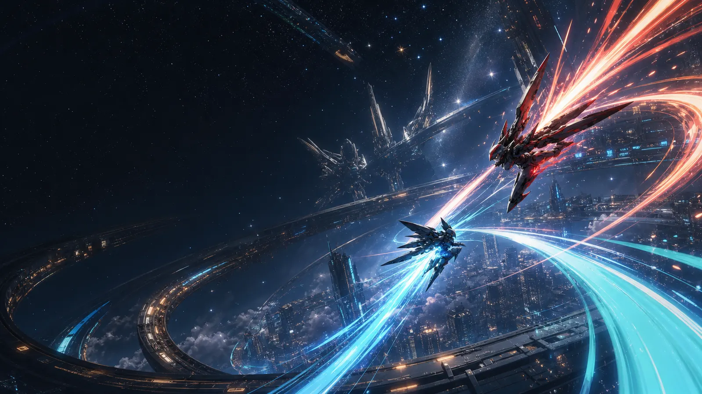

StarWard Database
キャラ情報、歴代のアップデート情報、最高ランク帯の動画等 星の翼の様々な情報を知識的に見るための非公式サイトです。
Video Channels
公式PV、更新告知等の動画
Official YouTube
バージョン3.1「サマーダイビング」情報公開！
Official Shorts
【#星導使情報 】「シルバースパークル」プリシュカ CV:#小清水亜美
Tools
キャラ別アップデート、ランダム抽選、2v2座学用ツール、Pick/BanをこのHPから開けます
Special Thanks
攻略動画、検証、情報提供でお世話になった方々です。
Edit Special Thanks